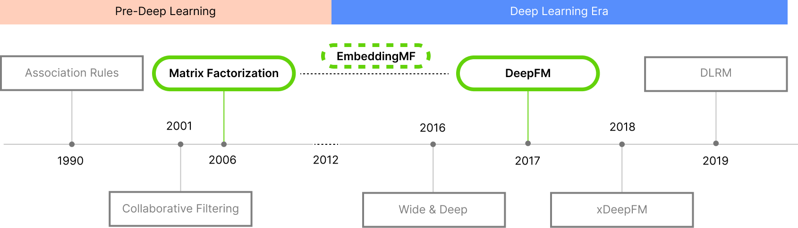
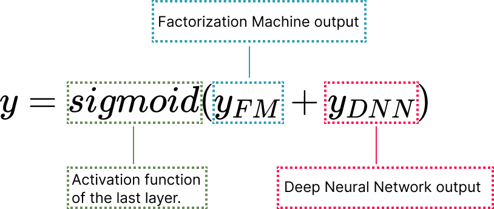

If you have ever used an e-commerce service or a streaming platform, you have already seen at least
one of these: recommended for you
, or other users have also bought this
. In
this article, we will give you an introduction to Recommender Systems (RS), and illustrate how new
deep-learning algorithmic techniques in this field work.
First, we illustrate how Matrix Factorization (MF), a relatively simply designed recommender system, works. Then, we increase the sophistication of our approach, exploring the effect this has on the prediction accuracy of a model. We explain differences in two models' competence in predicting a user's rating of movies they have seen by leveraging various visualization strategies. Through this article, we hope that you will gain intuition and visual understanding of how recommender systems work.
Recommender systems: what are they?
Recommender systems are defined as techniques that suggest items
for a given user to interact with [1]. Usually, and so especially on the web, recommendations are
personalized to the specific user interacting with the system. By item
, we refer to
what the system is recommending to the user. This item could be the next movie you watch, song
you listen to, the fastest path to your next destination, or your next date!
The recommendation process can be divided into four steps: querying, retrieving, filtering, scoring, and ranking.
This box is interactive! Hover over the different steps below to learn more
The recommendation process starts when a user makes a query to an online platflorm

Items are retrieved based on the query. Their order is arbitrary.

The items retrieved are filtered based on some set of preferences

Each item is given a score, and the item rankings are returned to the user.
The top item is the system's recommendation.
In order to generate recommendations, RS may accept input data like users' preferences, items' characteristics, explicit feedback, implicit feedback... Essentially, any measurable information about the items or users the RS is interested in modeling. When computing recommendations, this information is retrieved from a database and then stored in matrices. The matrix data object optimizes a lot of the computation required to reach a recommendation. Why this happens is beyond the scope of this discussion, but you can read about this process in detail here [10].
The most accessible data are explicit ratings, which include explicit input from the user regarding
their level of interest in a product, i.e. the rating a user gave to an item. Usually, explicit
feedback can be represented by a sparse
matrix. A sparse matrix is characterized as
a matrix where only a small number of fields have non-zero (or non-null) values. Since users are
unlikely to rate more than a small number of items from the entirety of those available in a dataset,
querying explicit information results in sparse matrices.
Of course, sparse matrices are not sufficient for training a model, and it is unreasonable to expect a complete dataset of explicit data. So, we learn the similarities a given user has with other users, and use these to predict how much they would like some unseen item.
While explicit feedback is preferable, it is also possible to use implicit feedback to reflect user behavior. Examples of implicit feedback include the browser history on a website, the number of clicks made on a given page, and a user's pattern of mouse movement. As opposed to explicit feedback, implicit feedback is represented by a densely filled matrix, because we (as researchers) can dictate how this data is to be collected or organized.
Classical recommender systems can be grouped into two main approaches: content-based (CB) and collaborative filtering (CF).
Content-based filtering generates a recommendation using additional information about the given user and item, through what we call features, which explain the observed interaction between a user and an item.

Collaborative filtering: generates a recommendation by relying on past user-item interaction, like explicit feedback (ratings) for movies watched in the past. In CF, it is sufficient to detect similar users and/or items, cluster them, and make new predictions based on the similarity existing within a cluster [6].
The table below summarizes the advantages and disavantages of the two approaches. For more in-depth information, take a look at these references: [11, 12, 13].
| Content-based | Collaborative Filtering | |
|---|---|---|
| Advantages |
|
|
| Disadvantages |
|
|
Matrix Factorization: Interpretable collaborative filtering
Matrix Factorization (MF) is a class of collaborative filtering techniques [3]. In
its most simplistic form, Matrix Factorization characterizes both the items and the users by a vector of
factors (matrices), which then generate latent features (embeddings
)
when they are multiplied together (into the matrix dot product
).
This method has become popular because it offers flexibility for modeling real-life scenarios while maintaining robust scalability and predictive accuracy [2]. Moreover, since it is based on pure math, it can be classified as an interpretable recommendation method! With MF, we are able to track exactly how our input data is transformed by the model when making a recommendation.
This box is interactive! Hover over the matrices below to learn how they are used to calculate the dot product (and make a recommendation)
The rating matrix stores the dot product of
the user and item matrices.

The user matrix stores the users' item-feature
preferences. Here, the 4 users set 2 feature preferences in a range of [0,1].

The item matrix stores the items' feature
scores. Here, each of the 4 items contains 2 features.
Each item i and user u are associated with a vector qi and wu, respectively. For a given item, the corresponding vector measures the degree to which a feature represents the item. Similarly, the user vector wu measures the degree of interest the user has in the item.
The interaction, defined as the interest of the user u in item i
, is then captured
by the dot product of these two vectors. Once all the dot products are computed, it becomes possible to
rank the predicted ratings and identify the best item to recommend to any given user.

This box is interactive! Adjust your preferences through the movie genre sliders
for comedy and horror, and then click on Calculate Matrix Factorization
to see how
your preferences align with those of your friends'
Let's consider the following example: you are planning a movie night with your friends Anna, Jonny, and Kimi. You know that Anna likes both horror movies and comedy, Jonny has a strong preference for comedy, and Kimi prefers horror movies, but also enjoys comedy once in a while. To find a movie that everyone will enjoy, you are going to use a recommender system based on the Matrix Factorization techniques described above.
Comedy preference:
Horror preference:
| User | Comedy | Horror |
|---|---|---|
| Anna | 0.6 | 0.5 |
| Jonny | 0.7 | 0.1 |
| Kimi | 0.4 | 0.9 |
| You | 0.5 | 0.5 |
| Item | Comedy | Horror |
|---|---|---|
| Zombieland | 3 | 2 |
| Modern Times | 5 | 1 |
| The Grudge | 1 | 5 |
How to read the results: to help you decide which movie to watch, you just look at the last row of the Matrix Factorization results. This row represents each movie's average predictive rating within your group.
While Matrix Factorization can produce good results in a short time, this method also features some disavantages:
- Cold start problem: The matrix cannot handle fresh items, such as new movies or new users [14].
- Recommendation relevance: Matrix Factorization uses the dot product to recommend items. If all users have interacted and liked the same item, the recommendation will focus on that item.
- Hard feature encoding: In order to generate a recommendation, we have to explicitly provide the system with user preferences and item features.
Embedding powered systems
Nowadays, recommender systems consider many more features than our MF example above:
- Categorical: userID, itemID, item brand, genre, language, etc.
- Numerical: price, delivery time, number of reviews, average of the reviews, etc.
- Unstructured: keywords, colors, material, review text, etc.
In a real-world scenario, we likely would not have explicit data on the preferences of every user and the features of every item. This hinders our ability to make optimal recommendations. How might we resolve this?
EmbeddingMF: An embedding approach to matrix factorization
Building on top of our previous approach, Matrix Factorization, we learn the latent factors (implicit characteristics) for each movie and user, based on user-movie ratings. Learning these characteristics can be done through approached like gradient descent [16].
We will use the EmbeddingMF
approach, which includes a bias term on top of our existing
dot product. We start by creating two embedding matrices:
-
A user embedding matrix U, containing one user per row, and n user features as
columns.
For a set of 100 users and 200 features, U will have dimensions of (100, 200) -
A movie embedding matrix M, containing one movie per row, and n movie features as
columns.
For a set of 100 movies and 200 features, M will have dimensions of (100, 200)
Having the same number of columns in each matrix allows us to multiply the two embedding matrices (U x MT ). Next, we add bias terms to each user and each movie. Adding bias to our matrix product results in a matrix representing predictive user ratings for all the movies in our dataset. Since these latent factors (features) are initialized by random numbers (independently and identically distributed Normal samples), the initial ratings that are computed by the model differ largely from the ground truth. During training, the difference between our latent factors and the ground truth is minimized.
The model consists of a user matrix of size (n_users x 128) and a movie matrix of size (n_movies x 128) and a user bias (n_users) and a movie bias (n_movies). We randomly initialize the latent factors for every user and movie with a mean of 0 and a standard deviation of 0.01. After the multiplication of users and movies we apply a sigmoid range that squeezes the results between 0 and 5.5 so the model can focus on learning something within this range. We trained the model over 15 epochs using the MSELoss, a learning rate of 0.005, and a weight decay of 0.1 which helps to prevent the model from overfitting.
The EmbeddingFM was able to generate good recommendations with an average validation error of 0.71. The dataset, Movielens 1M, used to train and the model contains metadata as: the user occupation, user age, and location. How can use some or all of these metadatas?
DeepFM: A deep learning factorization machine
The adoption of deep learning models has been on the rise in every domain, including recommender system. The first model that generated state of the art (SOTA) results was Wide&Deep [5], a deep learning model made by Google in 2016. A complete timeline of SOTA model can be seen in the figure below. For the goal of this article, we are going to consider as a deep learning model, the Factorization-Machine based neural network (DeepFM), developed by Huawei in 2017 [6].
Architecturally, DeepFM consists of two components: a Factorization Machine (FM) component and a deep component that share the same input. For a feature i, a scale wi is used to weigh its order-1 (linear) importance , a laten vector Vi is used to measure its impact of interactions with other features. The laten vector is then fed in the FM component to model order-2 (pairwise) feature interactions. The result, yFM , is then fed in the deep component to model the high-order feature interactions. All parameters are trained joyintly for the combined prediction y represented by the following formula:

Factorization Machines: Are model class that combines the advantages of Support Vector Machines (SVM) with factorization models [7]. Factorization Machine are are a general predictor that model all interactions between variables using factorized parameters. By doing so, they are able to estimate interactions even in problems with huge sparsisty as is the case in recommender systems.
Deep component: The deep component is a feed-forward neural network which is used to learn high-order feature interactions. Two interesting feature of this deep learning structure are:
- While the lengths of different input field vectors can be different, thei embedding are of the same size.
- The latent feature vectors, output of the FM, is now use as network weights which are learned and used to compress the input fields vector to the embedding vectors.
One recommender cannot rule them all
All models are wrong, but some are useful.
[15]
- George Box, 1976
All models are wrong, but some are useful.[15]
- George Box, 1976
We have trained the two models described above, the EmbeddingFM and the DeepFM, with the task of generating a recommendation to a test set of 100k entries. By plotting the distribution of the true and predictive rating, see figure below, it is possible to notice that the distribution of the DeepFM is skewed towards the rating 3, while the one of the EmbeddingFM is skewed towards the 4 as the true ratings. [TODO: add mean ratings of all models in this and error plot]
To better understand these results, we decide to validate our approaches using the Root Mean Squared Error (RMSE), one of the most used metrics in the Recommender System field. RMSE is typically used when the developer wants to evaluate a predicted score, like the predictive rating of a movie, and compare it to a ground truth (true rating). Compared to other metrics, RMSE but more emphasis on larger absolute error. Lower RMSE better translate in a better recommendation accuracy [1, 8].
By plotting the RMSE of the two models it is possible to notice that both the two models described
above present a high RMSE value at the two extremes (prediction rating of 1 or 2 and rating of 5). While
the error on rating 1 and 2 can be explained considering that people are more willing to share
positive experiences than negative ones
[9].
We define a perfect recommendation systems as system that will recommend only movies that the user will 100% like and rate as 5. The above plot, on the contrary, it shows that both models are not perfect in recommending that kind of movies. Based on this evidence and our definition of perfect recommender system, we decide to use the explain by example methodology to explain how the two models generate the movie recommendations for a user that are predicted with a rating of 5.
To support this direction, we are going to use a custom Venn Diagram with three sets: true rating (movie rated 5 by the users), predicted ratings from the embedding matrix factorization, and predicted ratings from the DeepFM model.
WRITE SOMETHING HERE

Let's consider the following user: Xiao. He is 25-34 years old writer who lives in the West Coast. We have retrieved the top 10ish movies that both models would recommend to himand some movies that he liked and rate 5 but the models have not recommended to him.
This box is interactive! the movies are represented by dot in the different sets of the Venn Diagram. The line that starts from the center represent the error that has been made.
EmbeddingFM
DeepFM
The model under estimate the rating that the user will give.


The model over estimate the rating that the user will give.
Hover one of the point to discover what is the movie name, the true rating, and the predicted scores from the model(s)
Of the above plot, what it is interesting to notice are the two movie in the bottom left of the true rating set and the two movies in the intersection between the two movies. The first movies represent movies that the user has liked and rate 5 but both models will not recommend to the user. The latter ones, are movies that both models think that the user will like and rate 5 but in reality the users will not like.
We can explore more in details these cases where the movies recommended and the user preferences do not overlap, we can plot the rating distribution on the training data together with the user rating. By doing so, we can see if the model suffer from some kind of bias or not.
Conclusion
TO EDIT : the two models above actually result in non-personalized recommendations, such as those you may have seen in print newspapers or magazines. These recommendations rely solely on popular opinion of the population, rather than characteristics specific to a user.
While recommender systems aims in generating a personalized experience on the web, the model are not trained on a single user but on a group. With this article we have shows that .... Thanks to this explnation we tried to show that if the focus shift from data/model centric to more human centric the models are not really generate personalized recommendations.
Acknowledgments
Text
Further Reading
text
References
[1] Ricci, Francesco, Lior Rokach, and Bracha Shapira. "Introduction to recommender systems handbook." Recommender systems handbook. Springer, Boston, MA, 2011. 1-35.
[2] Koren, Yehuda, Robert Bell, and Chris Volinsky. "Matrix factorization techniques for recommender systems." Computer 42.8 (2009): 30-37.
[3] Lee, Daniel D., and H. Sebastian Seung. "Learning the parts of objects by non-negative matrix factorization." Nature 401.6755 (1999): 788-791.
[4] Glauber, Rafael, and Angelo Loula. "Collaborative filtering vs. content-based filtering: differences and similarities." arXiv preprint arXiv:1912.08932 (2019).
[5] Cheng, Heng-Tze, et al. "Wide & deep learning for recommender systems." Proceedings of the 1st workshop on deep learning for recommender systems. 2016.
[6] Guo, Huifeng, et al. "DeepFM: a factorization-machine based neural network for CTR prediction." arXiv preprint arXiv:1703.04247 (2017).
[7] Rendle, Steffen. "Factorization machines." 2010 IEEE International conference on data mining. IEEE, 2010.
[8] Isinkaye, Folasade Olubusola, Yetunde O. Folajimi, and Bolande Adefowoke Ojokoh. "Recommendation systems: Principles, methods and evaluation." Egyptian informatics journal 16.3 (2015): 261-273.
[9] 2018 Customer Experience, https://www.sitel.com/report/2018-cx-index/
[10] Deisenroth, Marc Peter, A. Aldo Faisal, and Cheng Soon Ong. Mathematics for machine learning. Cambridge University Press, 2020.
[11] Pazzani, Michael J., and Daniel Billsus. "Content-based recommendation systems." The adaptive web. Springer, Berlin, Heidelberg, 2007. 325-341.
[12] Sharma, Ritu, Dinesh Gopalani, and Yogesh Meena. "Collaborative filtering-based recommender system: Approaches and research challenges." 2017 3rd international conference on computational intelligence & communication technology (CICT). IEEE, 2017.
[13] Hannon, John, Mike Bennett, and Barry Smyth. "Recommending twitter users to follow using content and collaborative filtering approaches." Proceedings of the fourth ACM conference on Recommender systems. 2010.
[14] Lika, Blerina, Kostas Kolomvatsos, and Stathes Hadjiefthymiades. "Facing the cold start problem in recommender systems." Expert systems with applications 41.4 (2014): 2065-2073.
[15] Box, George E. P. (1976), "Science and statistics" (PDF), Journal of the American Statistical Association, 71 (356): 791-799, doi:10.1080/01621459.1976.10480949.
[16] Ruder, Sebastian. "An overview of gradient descent optimization algorithms." arXiv preprint arXiv:1609.04747 (2016).
Reuse
Diagrams and text are licensed under Creative Commons Attribution CC-BY 4.0 with the source available on GitHub, unless noted otherwise. The figures that have been reused from other sources don’t fall under this license and can be recognized by a note in their caption: “Figure from …”.